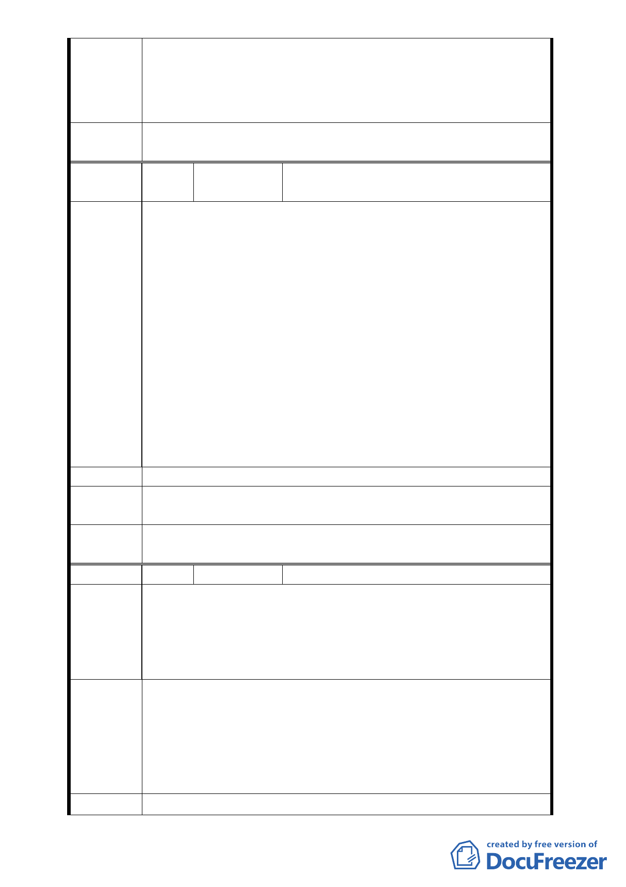

提出具體路線圖後提大會說明。
4.本案位於文化體育園區與台鐵機廠開發案之間，未來巨蛋、
文化園區、台鐵開發案所引發之交通量需一併考量，請市府
教育局統籌規劃因應。
委員會決
議
同編號 1
編 號 13
陳情人
臺北市政府都市發展局函轉公展說明會
民眾意見綜整
1. 本案變更位置位於信義區新仁里，當地里長及里民反映倘北
側道路開闢後，車流將會引進忠孝東路 4 段 553 巷內，增加
交通之衝突點，使居民生活品質降低，故表示不贊成本變更
案。
陳情理由
2. 本案因涉文化園區、體育園區等重大建設之開發，且涉及台
灣鐵路管理局台北機場之整體規劃，應考量周邊重大建設整
體規劃道路系統，並建請由中央主導協調本案之進行。
3. 建議本案道路應從台北文化體育園區南側逸仙路往北直接
貫穿園區至市民大道，或採地下穿越之方式，才不至影響忠
孝東路 4 段 553 巷居民之進出。
4. 目前大巨蛋及文創園區之開發案均尚未確定動工，應俟開發
案均確定後，再依實際需求規劃本案道路。
5. 建議松山菸廠應重新規劃作為公園，提供鄰近居民休憩場所
而非規劃過多的商業設施及體育場所。
建議辦法
－
專案小組
審查結論
同編號 2
委員會決
議
同編號 1
編 號 14
陳情人 馬孟先
不反對變更上述工業區為道路用地，但反對市民大道匝道
闢建道路後，打通忠孝東路 4 段 553 巷與之相連，因 553 巷及
陳情理由 559 巷皆為雙向單線道之巷弄，若車流量因路通而增大，勢必
影響原居民之行人安全，並導致空氣、噪音汙染，影響生活品
質。
建議直接由逸仙路延伸道路進文化體育園區，直接進地下停車
場，並於新闢之市民大道匝道道路端亦設停車場出入口，如此
建議辦法
車流可分別由南、北兩方向進出停車場，且不會破壞伊東豐雄
設計之建築物；由其文化及體育園區皆尚未動工，現在變更規
劃還來得及。此道路計畫之主要目的是進出園區車輛的動線，
553巷居民並不需要直通市民大道。
專案小組 同編號 2
- 14 -